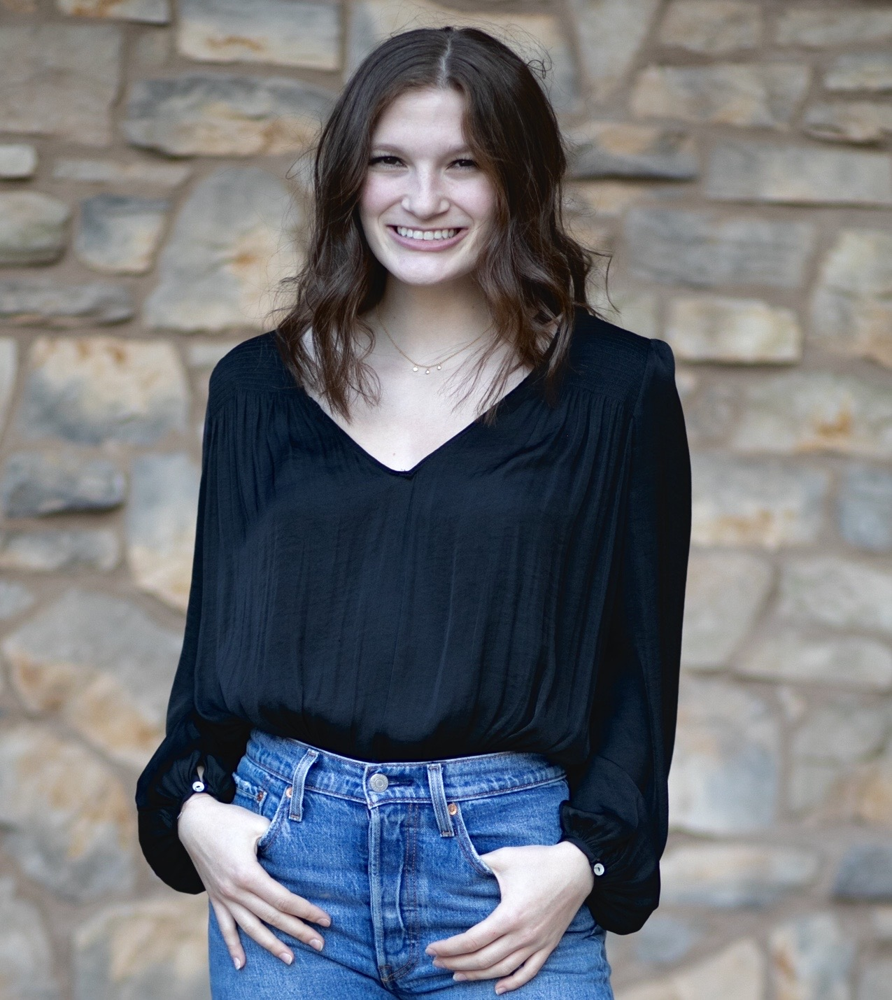

 My biggest passion is telling stories. Whether my medium is a magazine article, a social media caption, or a website's design, I love being the bridge between someone's message and an audience. My background is in editorial journalism, but I have experience writing and editing for everything from long-form profiles to social ads to user experience. I love a challenge, and I don't love to sit still, so I'm ready to take on whatever you've got one for me. What story do you have to tell?